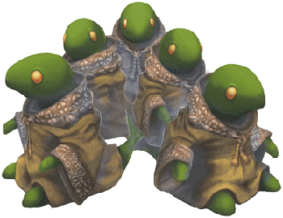
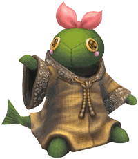

8 |
Personajes |
 |
¡La princesa un tanto demente que planea dominar el mundo!  La princesa de los monstruos, recientemente coronada nueva Señora Oscura para celebrar su decimosexto cumpleaños. Llena de resentimiento hacia su padre, el anterior Señor Oscuro (del que se decía que era débil), declara al instante una guerra total contra los aventureros para expresar su ardiente deseo de dominar el mundo. Nada le agrada más que comportarse como una auténtica Señora Oscura y hacer sufrir a sus propios monstruos y sirvientes casi tanto como a los aventureros. Criada en un entorno protegido y totalmente malcriada por sus sirvientes tomberis, el temperamento de Mira es de armas tomar. Si alguien es tan temerario como para enfrentarse a su ira, lo más probable es que termine experimentando el horror de su peor castigo: ser pisoteado por un bégimo.
Pisoteados, apaleados y maltratados. 
Pero su devoción no desfallece. Estos son todos los leales tomberis que han servido a la princesa durante años. Aunque cada uno tiene su nombre (Tombero, Tomzura, Donjiri, etc.), es imposible distinguirlos por su aspecto. De hecho, nadie sabe siquiera cuántos hay. Quizá trabajan y duermen por turnos, o algo así. ¿Quién sabe? Mira, la princesa, los castiga con saña constantemente o les obliga a realizar sus estrambóticos encargos, pero ellos nunca se quejan de su destino. Se rumorea que están acumulando el poder de su ataque "rencoroso"... Los tomberis se llevan fatal con los hermanos moguris, una agencia ubicada en otro reino.
La líder de superélite de los tomberis. 
Es la líder de los sirvientes tomberis, a pesar de ser la más joven de todos ellos. Nadie conoce su procedencia, pero cuando se trata de lealtad y de servicio desinteresado, no hay ningún otro sirviente a su altura. No queremos ser groseros, pero Tongarry no parece un tomberi, sino más bien una persona disfrazada de tomberi. Y, por lo que sabemos, podría ser realmente un disfraz... Pero, en ese caso, ¿quién está dentro? |
 |
 |
 |